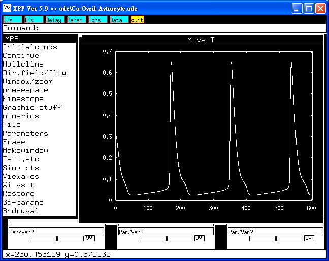

This is the readme for the model associated with the papers: Ref: Laventovich and Hemkin, A mathematical model of spontaneous calcium(II) oscillations in astrocytes. J Theor Biol 2008; 251(4):553-60. Abstract: Astrocytes exhibit oscillations and waves of Ca2+ ions within their cytosol and it appears that this behavior helps facilitate the astrocyte's interaction with its environment, including its neighboring neurons. Often changes in the oscillatory behavior are initiated by an external stimulus such as glutamate, recently however, it has been observed that oscillations are also initiated spontaneously. We propose here a mathematical model of how spontaneous Ca2+ oscillations arise in astrocytes. This model uses the calcium-induced calcium release and inositol cross-coupling mechanisms coupled with a receptor-independent method for producing inositol (1,4,5)-trisphosphate as the heart of the model. By computationally mimicking experimental constraints we have found that this model provides results that are qualitatively similar to experiment. To run the model: Expand the archive and cd into the newly created directory and run: xppaut Ca-Oscil-Astrocyte.ode then click on Initialcond -> Go  This simulation will make graphs similar to the paper of Laventovich and Hemkin. Note that the cytosolic calcium concentration shown in figure 3 of the paper should be increased by 10-fold. The model file was supplied by: Dr. Sheng-Nan Wu Cardiac Electrophysiology and Systems-biology Center (CESC) National Cheng Kung University Medical College Tainan 70101, Taiwan e-mail: snwu@mail.ncku.edu.tw